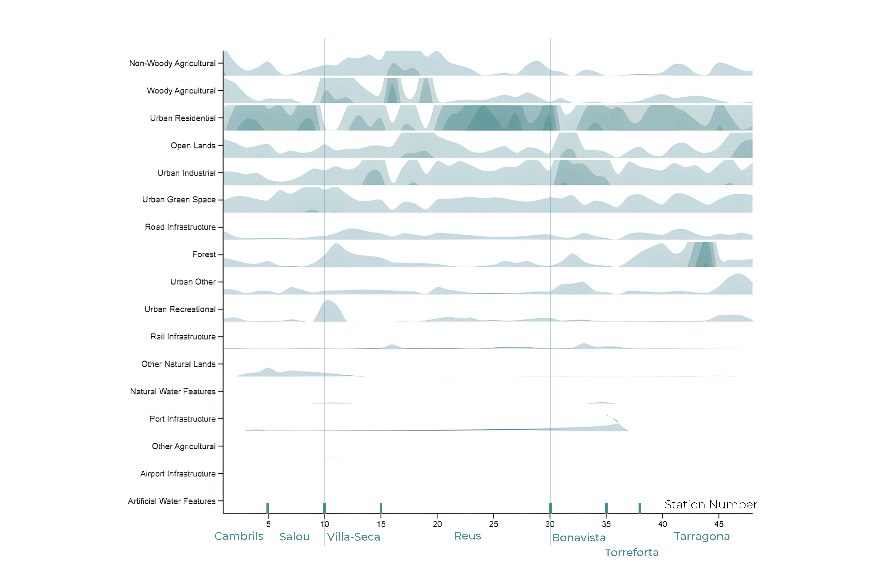
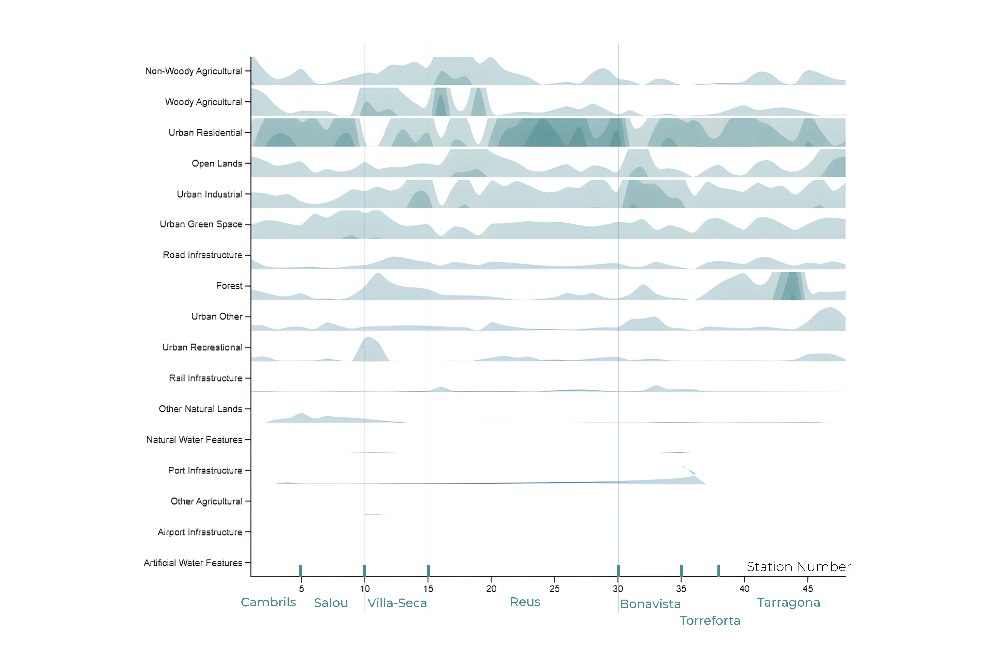

Land Use & Corridor Analysis TramCamp Corridor · Camp de Tarragona, Spain

 

As part of the Camp de Tarragona Studio at the University of Pennsylvania, this analysis examined the existing land-use structure along the proposed TramCamp light rail corridor. Before proposing housing or development strategies, the studio first sought to understand what the tram is actually connecting.
The corridor links Cambrils, Salou, Vila-Seca, Reus, Bonavista, Torreforta, and Tarragona — moving across residential centers, industrial belts, agricultural plains, port infrastructure, and fragmented open land. This study focused on mapping and measuring that spatial reality.
This phase developed a comprehensive land-use mapping and distribution study across all proposed station areas to identify where transit could reinforce existing urban structure and where deeper land-use transition would be required to reduce fragmentation.
- Classification of major land-use categories: residential, industrial, port, agriculture, forest, open lands, infrastructure, and water systems
- Station-based buffer analysis to assess land-use composition within walkable catchments
- Development of a longitudinal land-use distribution diagram mapping intensity across station numbers
- Identification of infrastructure barriers reinforcing spatial fragmentation
The land-use distribution diagram was the central analytical tool. Rather than reading land-use only through maps, the diagram visualized how different categories rise and fall in intensity along the corridor. It revealed that the tram does not connect continuous urban fabric, but a sequence of distinct land-use territories.
Residential density peaks in Reus and parts of Tarragona, industrial and port infrastructure dominate specific coastal segments, and large agricultural and open-land areas interrupt urban continuity. Several station areas show limited land-use diversity, reducing immediate transit-oriented potential.
This analysis demonstrated that development capacity and urban intensity are unevenly distributed. The corridor contains both high-activity nodes and spatial voids. Understanding these imbalances was critical — it established where transit could support existing centers and where land-use transition would be needed to enable cohesive metropolitan growth.
- QGIS
- Python